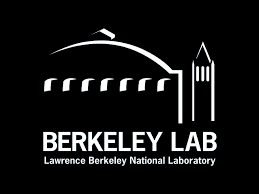
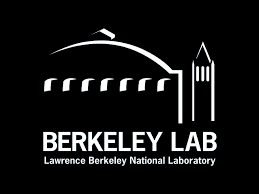

홈 |
구성원 |
연구분야 |
논문 |
프로젝트 |
수업 |
박장호
|
연락처박장호조교수 시스템경영공학과 / 산업공학과 성균관대학교 (16419) 경기도 수원시 장안구 서부로 2066 제2공학관 27416A호 전화번호: 031) 290-7595 이메일: janghopark at skku dot edu 학과프로필:링크 연구실: 확률기반최적화 연구실 |

|
소개
박장호는 성균관대학교 시스템경영공학/산업공학과 조교수로 운영연구, 최적화 등에 대한 강의와 연구를 진행하고 있다. 이전에는 홍익대학교 조교수로 재직했다. 한국으로 돌아오기 전에는 미국 샌프란시스코의 월마트(Walmart)와 시애틀의 테이카메트릭스(Teikametrics)에서 데이터 과학자로 근무하면서 광고 최적화, 애드테크, 옴니채널 광고 업무를 맡았다. 또한, 그는 로렌스 버클리 국립 연구소(Lawrence Berkeley National Laboratory) 전산연구 부서의 박사후 연구원이었다. 그는 미국 오하이오 주립대학교 콜럼버스에서 Güzin Bayraksan 교수님의 지도하에 산업시스템공학 박사 학위, 포항공과대학교에서 전치혁 교수님의 지도하에 산업경영공학 석사 학위를, 한양대학교에서 산업공학 학사 학위를 취득했다.
경력
- 2024/03 ~ 조교수, 성균관대학교 | 수원, 대한민국
- 2023/03 ~ 2024/02 조교수, 홍익대학교 | 서울, 대한민국
- 2022/05 ~ 2023/02 데이터 사이언티스트, 월마트 | 샌프란시스코, 캘리포니아 주, 미국
- 2021/06 ~ 2022/05 데이터 사이언티스트, 테이카메트릭스 | 시애틀, 워싱턴 주, 미국
- 2019/05 ~ 2021/05 박사후연구원, 로렌스버클리 미국립연구소 | 버클리, 캘리포니아 주, 미국
- 2013/01 ~ 2013/06 사원, 현대모비스 | 서울, 대한민국
- 2007/02 ~ 2009/01 군복무, 대한민국 육군 | 안양, 대한민국 / 아르빌 이라크 (해외파병)
 
